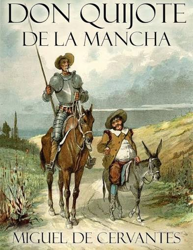

Don Quijote
Protagonista de la novela. Es un hidalgo que desea convertirse en caballero andante. Su imaginación, idealismo y manera de interpretar la realidad provocan situaciones cómicas y reflexivas.

COMEDIA · PARODIA · LITERATURA CLÁSICA
Un hombre apasionado por los libros de caballerías decide convertirse en caballero andante. Junto a su escudero Sancho Panza, emprende aventuras en las que su imaginación transforma situaciones cotidianas en extraordinarios desafíos.
Don Quijote de la Mancha
Miguel de Cervantes Saavedra
1605
1615
España
Narrativo
Novela
Parodia, sátira, ironía y humor de situaciones
España, principalmente La Mancha
Don Quijote y Sancho Panza
Alonso Quijano es un hidalgo que vive en La Mancha, España. Debido a su enorme afición por los libros de caballerías, comienza a confundir las historias que lee con la realidad.
Convencido de que debe convertirse en un caballero andante, adopta el nombre de Don Quijote de la Mancha, prepara una antigua armadura y decide recorrer los caminos para ayudar a los necesitados y combatir las injusticias.
Don Quijote elige como caballo a Rocinante y considera a Dulcinea del Toboso la dama a quien dedicará sus hazañas. Posteriormente, convence a Sancho Panza, un campesino, para que lo acompañe como escudero.
Durante sus viajes, Don Quijote interpreta la realidad de una manera completamente distinta. En una de las escenas más famosas, confunde unos molinos de viento con gigantes y decide enfrentarlos.
A través de aventuras, conversaciones y situaciones divertidas, la novela presenta el contraste entre los ideales de Don Quijote y el sentido práctico de Sancho Panza.
La obra combina humor, crítica social y reflexión sobre la imaginación, la amistad, los sueños y la diferencia entre fantasía y realidad.
Protagonista de la novela. Es un hidalgo que desea convertirse en caballero andante. Su imaginación, idealismo y manera de interpretar la realidad provocan situaciones cómicas y reflexivas.
Campesino que acompaña a Don Quijote como escudero. Es práctico, ingenioso y utiliza refranes constantemente. Su personalidad contrasta con la de su compañero.
Mujer idealizada por Don Quijote. Aunque su presencia directa es limitada, representa el amor y los ideales caballerescos que motivan al protagonista.
Caballo de Don Quijote. Es un animal viejo y delgado, pero su dueño lo considera digno de un gran caballero andante.
Conocidos de Don Quijote que intentan ayudarlo y hacerlo regresar a su hogar. Participan en varios episodios de la historia.
Bachiller que aparece en la segunda parte de la novela. Intenta intervenir en las aventuras de Don Quijote para conseguir que abandone su vida de caballero.
Don Quijote de la Mancha es una novela que contiene importantes elementos de comedia porque utiliza la parodia, la ironía, los malentendidos y el contraste entre personajes para generar situaciones humorísticas. Al mismo tiempo, presenta una crítica a las novelas de caballerías y a diversas costumbres de su época.
Después de tantas risas, llega el momento de explorar historias llenas de misterio, suspenso y miedo.